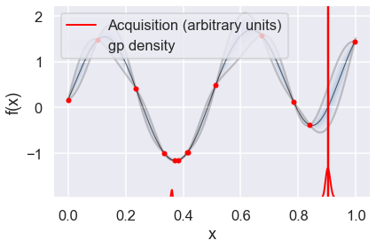
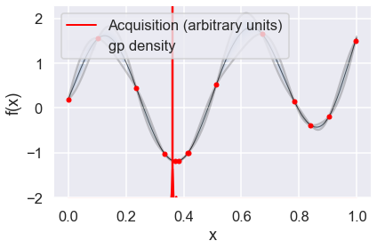
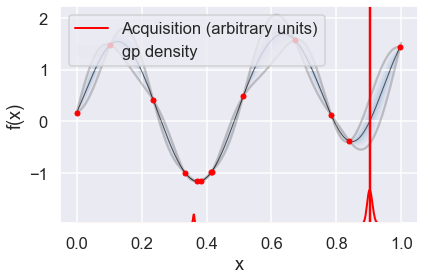
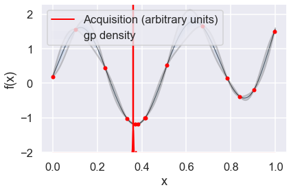
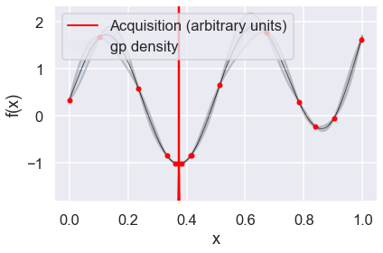
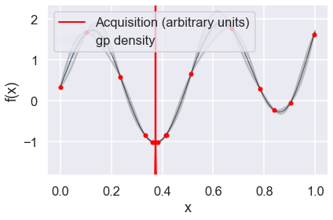

10.1. Physics 8805¶
Learning from Data: Bayesian Methods and Machine Learning¶
Autumn, 2019¶
\(% Some LaTeX definitions we'll use. \newcommand{\pr}{\textrm{p}} \)
Bayesian Optimization¶
Adapted from Christian Forssen, TALENT Course 11, June, 2019, with extra documentation by Dick Furnstahl in November, 2019.
Selected references
Paper: Bayesian optimization in ab initio nuclear physics by A. Ekström, C. Forssén et al., J. Phys. G: Nucl. Part. Phys. 46, 095101 (2019).
Book: Jonas Mockus (2012). Bayesian approach to global optimization: theory and applications. Kluwer Academic.
Software: E.g., GPyOpt from Sheffield ML.
%matplotlib inline
import numpy as np
import scipy as sp
from scipy.stats import multivariate_normal
import matplotlib.pyplot as plt
import seaborn as sns; sns.set_style("darkgrid"); sns.set_context("talk")
import GPy
import GPyOpt # This will do the Bayesian optimization
Optimization of expensive objective functions¶
Let us first state an inconvenient fact about optimization:
Global minimization is almost always intractable. In practice, we have to resort to local minimization:
For \(f:\;\mathbf{R}^D \to \mathbf{R}\), with \(\theta \in \Theta \subset \mathbf{R}^D\) and possibly subject to constraints \(c(\theta) \leq 0\)
Find point(s) \(\theta_*\) for which $\( f(\theta_*) \leq f(\theta), \)\( for all \)\theta \in \Theta\( *close* to \)\theta_*\(. (Here \)\theta$ are the parameters of the theoretical model.)
Nevertheless, we will often want to do the best we can toward global minimization.
Consider expensive objective functions, e.g. $\( f(\theta) = \chi^2(\theta) \equiv \sum_{i=1}^N \frac{\left[ y_i^\mathrm{exp} - y_i^\mathrm{th}(\theta) \right]^2}{\sigma_i^2}, \)\( where \)y_i^\mathrm{th}(\theta)\( may be computationally costly to evaluate. (The objective function is the function we want to minimize, such as a \)\chi^2$ function.) How shall we proceed? Here we consider one strategy, Bayesian optimization, which has been used in the optimization of hyperparameters of deep neural networks. It is not necessarily the best strategy (see comments at the end), but it is an option in our toolkit.
Bayesian optimization¶
An optimization algorithm for expensive black-box functions
Bayesian optimization provides a strategy for selecting a sequence of function queries. This is an alternative to a gradient descent method, which relies on derivatives of the function to move toward a nearby local minimum.
This diagram from Wikimedia Commons illustrates the sequential moves in Newton’s method for finding a root, with a sequence of \(x\) values: \(x_0 \rightarrow x_1 \rightarrow x_2 \rightarrow \ldots\) that approach a nearby zero of the function.
 If applied to the derivative of a function, this yields a sequential approximation to a local minimum or maximum. We seek a different way to construct this sequence.
If applied to the derivative of a function, this yields a sequential approximation to a local minimum or maximum. We seek a different way to construct this sequence.
There are two main components in the Bayesian optimization algorithm, which will each be contingent on what we call the data \(\mathcal{D}\), which will be the previously evaluated pairs of \(\theta\) and \(f(\theta)\).
A prior probabilistic pdf \(p(f|\mathcal{D})\) for the objective function \(f(\theta)\) given some data \(\mathcal{D}\). The prior is often a Gaussian process (GP) or a GP emulator. This will be updated with every iteration. The GP acts as a surrogate for the actual objective function, which we can evaluate at any given \(\theta\), but it is so expensive to do so that we don’t know its structure a priori. The idea is that we will do Bayesian updating each iteration after confronting the surrogate model with actual data \(f(\theta)\). So we refine the posterior for \(f\), which becomes the prior for the next iteration.
An acquisition function \(\mathcal{A}(\theta|\mathcal{D})\) given some data \(\mathcal{D}\). This is a heuristic that balances exploration against exploitation and determines where to evaluate the objective function \(f(\theta)\) next. Explorative means that you evaluate points in a domain of \(\theta\) where the prior pdf for \(f\) has large uncertainty. This enables the escape from local minima in \(\theta\). Exploitive means that you evaluate points in a domain of \(\theta\) where the prior pdf for \(f\) exhibits low mean values. (This zeroes in on a local minimum.)
Pseudo-code for BayesOpt:
choose initial \(\mathbf{\theta}^{(1)},\mathbf{\theta}^{(2)},\ldots \mathbf{\theta}^{(k)}\), where \(k \geq 2\)
evaluate the objective function \(f(\mathbf{\theta})\) to obtain \(y^{(i)}=f(\mathbf{\theta}^{(i)})\) for \(i=1,\ldots,k\)
initialize a data vector \(\mathcal{D}_k = \left\{(\mathbf{\theta}^{(i)},y^{(i)})\right\}_{i=1}^k\)
select a statistical model for \(f(\mathbf{\theta})\) (for us some choice of GP kernel)
for {\(n=k+1,k+2,\ldots\)}
select \(\mathbf{\theta}^{(n)}\) by optimizing (maximizing) the acquisition function
\(\mathbf{\theta}^{(n)} = \underset{\mathbf{\theta}}{\text{arg max}}\, \mathcal{A}(\mathbf{\theta}|\mathcal{D}_{n-1})\)
evaluate the objective function to obtain \(y^{(n)}=f(\mathbf{\theta}^{(n)})\)
augment the data vector \(\mathcal{D}_n = \left\{\mathcal{D}_{n-1} , (\mathbf{\theta}^{(n)},y^{(n)})\right\}\)
update the statistical model for \(f(\mathbf{\theta})\)
end for
Some remarks:
Use a space-filling method such as LHS (Latin hypercube sampling) or Sobol (see references) for the initial \(k\) evaluations.
Use of a gaussian process, or a Gaussian emulator, for the statistical model of \(f(\theta)\).
The choice of aquisition function is the heart of BayesOpt. There are several possible choices; with different balance between exploration-exploitation.
Expected improvement
Lower confidence bound
The update of the statistical model is an \(\mathcal{O}(n^3)\) cost (if using a GP).
At each iteration, all collected data points are used, thus we build on the full history of the optimization procedure.
The stopping criterion might be a fixed computational budget that limits the number of function evaluations that can be made.
Acquisition functions¶
We will consider two different acquisition functions:
Expected Improvement (EI)
Lower Confidence Bound (LCB)
Note that we abbreviate the notation below and write \(\mathcal{A}(\mathbf{\theta}) \equiv \mathcal{A}(\mathbf{\theta}| D)\).
Expected Improvement¶
The expected improvement acquisition function is defined by the expectation value of the rectifier \({\rm max}(0,f_{\rm min} - f(\mathbf{\theta}))\), i.e. we reward any expected reduction of \(f\) in proportion to the reduction \(f_{\rm min} - f(\mathbf{\theta})\). This can be evaluated analytically $$
$$
where $\( \mathcal{N}(f(\mathbf{x})|\mu(\mathbf{\theta}),\sigma(\mathbf{\theta})^2) \)\( indicates the density function of the normal distribution, whereas the standard normal distribution and the cumulative distribution function are denoted \)\phi\( and \)\Phi\(, respectively, and we dropped the explicit dependence on \)\mathbf{\theta}$ in the third step.
In the last step we write the result in the standard normal variable \(z=\frac{f_{\rm min}-\mu}{\sigma}\). BayesOpt will exploit regions of expected improvement when the term \(z \Phi(z)\) dominates, while new, unknown regions will be explored when the second term \(\phi(z)\) dominates. For the expected improvement acquisition function, the exploration-exploitation balance is entirely determined by the set of observed data \(\mathcal{D}_n\) and the \(\mathcal{GP}\) kernel.
Note 1: Density function of the normal distribution: \(\mathcal{N}(\theta|\mu,\sigma^2) = \frac{1}{\sqrt{2\pi}\sigma}\exp\left( -\frac{1}{2\sigma^2}(\theta-\mu)^2\right)\)
Note 2: Density function of the standard normal distribution: \(\phi(z) \equiv \mathcal{N}(z|\mu=0,\sigma^2=1) = \frac{1}{\sqrt{2 \pi}}\exp\left( -\frac{1}{2}z^2\right)\)
Note 3: Cumulative distribution function of the standard normal: \(\Phi(z) = \frac{1}{\sqrt{2\pi}} \int_{-\infty}^{z}\exp\left(-\frac{t^2}{2}\right)\, dt\)
Lower Confidence Bound¶
The lower confidence-bound acquisition function introduces an additional parameter \(\beta\) that explicitly sets the level of exploration $\( \mathcal{A}(\mathbf{\theta})_{\rm LCB} = \beta \sigma(\mathbf{\theta}) - \mu(\mathbf{\theta}). \)\( The maximum of this acquisition function will occur for the maximum of the \)\beta\(-enlarged confidence envelope of the \)\mathcal{GP}\(. We use \)\beta=2\(, which is a very common setting. Larger values of \)\beta$ leads to even more explorative BayesOpt algorithms.
Univariate example of Bayesian optimization¶
Here there is only one parameter: \(\theta = \{x\}\).
xmin = 0.
xmax = 1.
def Ftrue(x):
"""Example true function, with two local minima in [0,1]."""
return np.sin(4*np.pi*x) + x**4
# For this problem, it is easy to find a local minimum using with SciPy, but
# it may not be within [0,1]!
np.random.seed() # (123)
x0 = np.random.uniform(xmin, xmax) # pick a random starting guess in [0,1]
result = sp.optimize.minimize(Ftrue, x0) # use scipy to minimize the function
print(result)
fun: -0.980364009184697
hess_inv: array([[0.00626602]])
jac: array([-8.94069672e-08])
message: 'Optimization terminated successfully.'
nfev: 21
nit: 4
njev: 7
status: 0
success: True
x: array([0.37367823])
# Plot the function and the minimum that scipy found
X_domain = np.linspace(xmin,xmax,1000)
fig, ax = plt.subplots(1, 1, figsize=(8,6))
ax.plot(X_domain, Ftrue(X_domain))
ax.plot(result.x[0], result.fun, 'ro')
ax.set(xlabel=r'$x$', ylabel=r'$f(x)$');

# parameter bound(s)
bounds = [{'name': 'x_1', 'type': 'continuous', 'domain': (xmin,xmax)}]
# We'll consider two choices for the acquisition function, expectived
# improvement (EI) and lower confidence bound (LCB)
my_acquisition_type = 'EI'
#my_acquisition_type = 'LCB'
# Creates GPyOpt object with the model and aquisition function
myBopt = GPyOpt.methods.BayesianOptimization(\
f=Ftrue, # function to optimize
initial_design_numdata=1, # Start with two initial data
domain=bounds, # box-constraints of the problem
acquisition_type=my_acquisition_type, # Selects acquisition type
exact_feval = True)
# Run the optimization
np.random.seed(123) # (123)
max_iter = 1 # evaluation budget (max_iter=1 means one step at a time)
max_time = 60 # time budget
eps = 1.e-6 # minimum allowed distance between the last two observations
Now we can use the GPyOpt run_optimization one step at a time (meaning we add one point per iteration), plotting the GP mean (solid black line) and 95% (??) variance (gray line) and the acquisition function in red using plot_acquisition. The maximum of the acquisition function, which will be the choice for \(x\) in the next iteration, is marked by a vertical red line.
What can you tell about the GP used as a surrogate for \(f(x)\)?
Note how the GP is refined (updated) with additional points.
# run for num_iter iterations
num_iter = 15
for i in range(num_iter):
myBopt.run_optimization(max_iter, max_time, eps)
myBopt.plot_acquisition()


 



 

# From the docstring:
# Makes two plots to evaluate the convergence of the model:
# plot 1: Iterations vs. distance between consecutive selected x's
# plot 2: Iterations vs. the mean of the current model in the selected sample.
myBopt.plot_convergence()
print(f'Optimal x value = {myBopt.x_opt}')
print(f'Minimized function value = {myBopt.fx_opt:.5f}')

Optimal x value = [0.37378141]
Minimized function value = -0.98036
Bivariate example (two parameters)¶
Next, we try a 2-dimensional example. In this case we minimize the Six-hump camel function
$\(
f(\theta_1,\theta_2)=\left( 4−2.1 \theta_1^2 + \frac{\theta_1^4}{3}\right)\theta_1^2+\theta_1 \theta_2+\left(−4+4\theta_2^2\right)\theta_2^2,
\)\(
in \)[−3,3]\(, \)[−2,2]$. This functions has two global minimum, at (0.0898, −0.7126) and (−0.0898, 0.7126), with function value -1.0316. The function is already pre-defined in GPyOpt. In this case we generate observations of the function perturbed with white noise of first of sd=0.01 and then sd=0.1.
# create the object function
f_true = GPyOpt.objective_examples.experiments2d.sixhumpcamel()
f_sim = GPyOpt.objective_examples.experiments2d.sixhumpcamel(sd = 0.1)
bounds =[{'name': 'var_1', 'type': 'continuous', 'domain': f_true.bounds[0]},
{'name': 'var_2', 'type': 'continuous', 'domain': f_true.bounds[1]}]
f_true.plot()
# Note that exact_feval is set to False here because of the white noise.
myBopt2D = GPyOpt.methods.BayesianOptimization(f_sim.f,
domain=bounds,
model_type = 'GP',
acquisition_type='EI',
normalize_Y = True,
exact_feval = False)
# runs the optimization for the three methods
max_iter = 40 # maximum time 40 iterations
max_time = 60 # maximum time 60 seconds
myBopt2D.run_optimization(max_iter,max_time,verbosity=False)
myBopt2D.plot_acquisition()
plt.tight_layout(); # This doesn't seem to help. How to fix spacing?

<Figure size 432x288 with 0 Axes>
myBopt2D.plot_convergence()
print(f'Optimal x values = {myBopt2D.x_opt}')
print(f'Minimized function value = {myBopt2D.fx_opt:.5f}')
Optimal x values = [-0.05271104 0.652924 ]
Minimized function value = -1.23848

Some concluding remarks¶
from the paper arXiv:1902.00941:
Prior knowledge/belief is everything! Important to tailor the acquisition function and the GP kernel to the spatial structure of the objective function. Thus, the usefulness of BayesOpt hinges on the arbitrariness and uncertainty of a priori information. Complicated by the fact that we resort to BayesOpt when little is known about the objective function in the first place, since it is computationally expensive to evaluate.
In general, BayesOpt will never find a narrow minimum nor be useful for extracting the exact location of any optimum. So one might want to use it as the first stage in a hierarchical optimization scheme to identify the interesting regions of parameter space. One may also want to switch from a more explorative acquisition function in early iterations to more exploitive in later iterations.
We find that the acquisition function is more important than the form of the GP-kernel.
BayesOpt would probably benefit from a prior that captures the large-scale structure of the objective function.
High-dimensional parameter domains are always challenging (subspace learning, dim reduction).